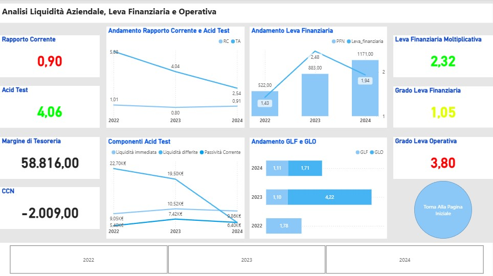

Analisi Economico-Finanziaria di Ryanair
Report e KPI principali
Descrizione
In questo progetto ho riclassificato il bilancio di Ryanair per gli anni 2022-2024 e costruito un report Power BI per analizzare i principali KPI di redditività, solidità finanziaria e struttura patrimoniale.
Overview Page
Nella pagina iniziale del report viene fornita una panoramica sull'andamento dell'azienda nei tre anni considerati, con l'ausilio dei principali KPI. Si osserva come l'andamento complessivo di ricavi e redditività sia positivo e in crescita. Tutti i dati sono filtrabili per singolo anno.
KPI Reddittività e Patrimoniali
In questa pagina vengono analizzati i principali KPI di redditività e solidità patrimoniale, con le relative scomposizioni. La redditività risulta molto buona e in crescita (considerando anche l'alta competitività del settore), come evidenziato dai grafici. Per quanto riguarda la solidità patrimoniale, si osserva un miglioramento, ma occorre prestare attenzione al rapporto di indebitamento, che rimane complessivamente elevato.

Solidità Finanziaria
In questa ultima pagina analizziamo la struttura finanziaria dell’impresa. La situazione appare meno positiva rispetto a quelle precedenti, principalmente a causa dell’elevato indebitamento, con particolare incidenza del debito a breve termine.
Il punto più critico è rappresentato dalla leva operativa, che evidenzia la presenza di costi fissi elevati e, quindi, un maggiore rischio operativo. È però importante notare che, nel tempo, il grado di leva operativa è in diminuzione, indicando un miglioramento nella gestione dei costi fissi.

Valutazioni Finali